स्कन्ध 3 · अध्याय 9
श्लोक १
मैत्रेय उवाच–
सत्सेवनीयो बत पूरुवंशो यल्लोकपालो भगवत्प्रधानः ।
बभूविथेहाजितकीर्तिमालां पदे पदे नूतनयस्यभीक्ष्णम्।। १ ।।
सत्सेवनीयो बत पूरुवंशो यल्लोकपालो भगवत्प्रधानः ।
बभूविथेहाजितकीर्तिमालां पदे पदे नूतनयस्यभीक्ष्णम्।। १ ।।
श्लोक २
सोऽहं नृणां क्षुल्लसुखाय दुःखं महद् गतानां विरमाय तुभ्यम् ।
प्रवर्तये भागवतं पुराणं यदाह साक्षाद् भगवान् ऋषिभ्यः।। २ ।।
प्रवर्तये भागवतं पुराणं यदाह साक्षाद् भगवान् ऋषिभ्यः।। २ ।।
भागवततात्पर्यनिर्णय
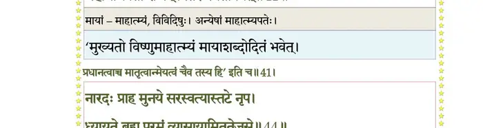
श्लोक ३
आसीनमुर्व्यां भगवन्तमाद्यं सङ्कर्षणं देवमकुण्ठसत्वम् ।
विवित्सवस्तत्त्वमतः परस्य कुमारमुख्या मुनयोऽन्वपृच्छन्।। ३ ।।
विवित्सवस्तत्त्वमतः परस्य कुमारमुख्या मुनयोऽन्वपृच्छन्।। ३ ।।
भागवततात्पर्यनिर्णय
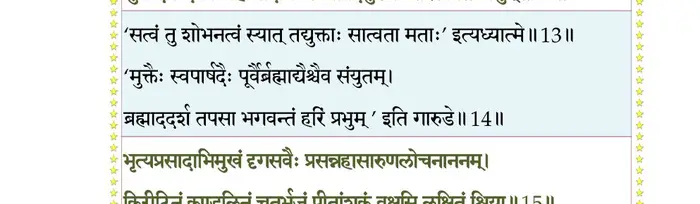
श्लोक ४
स्वमेव धिष्ण्यं बहुमानयन्तं यं वासुदेवाभिधमामनन्ति ।
प्रत्यक्धृताक्षाम्बुजकोशमीषदुन्मीलयन्तं विबुधोदयाय।। ४ ।।
प्रत्यक्धृताक्षाम्बुजकोशमीषदुन्मीलयन्तं विबुधोदयाय।। ४ ।।
भागवततात्पर्यनिर्णय
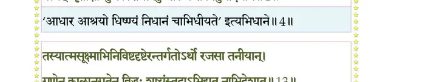
श्लोक ५
स्वर्धुन्युदारैः स्वजटाकलापैरुपस्पृशन्तश्चरणोपधानम् ।
पद्मं यदर्चन्त्यहिराजकन्याः सप्रोम नानाबलिभिर्वरार्हाः।। ५ ।।
पद्मं यदर्चन्त्यहिराजकन्याः सप्रोम नानाबलिभिर्वरार्हाः।। ५ ।।
भागवततात्पर्यनिर्णय
श्लोक ६
मुहुर्गृणन्तो वचसाऽनुरागस्खलत्पदेनास्य कृतानि तज्ज्ञाः ।
किरीटसाहस्रमणिप्रवेकप्रद्योतितोद्दामफणासहस्रम्।। ६ ।।
किरीटसाहस्रमणिप्रवेकप्रद्योतितोद्दामफणासहस्रम्।। ६ ।।
भागवततात्पर्यनिर्णय
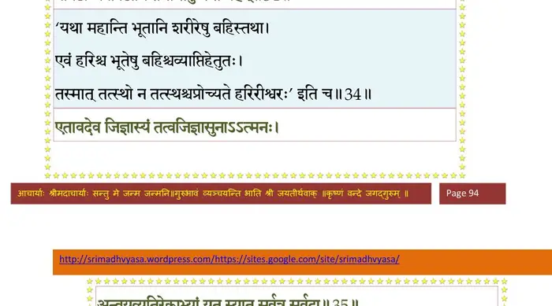
श्लोक ७
प्रेक्तं किलैतद् भगवत्तमेन निवृत्तिधर्माभिरताय तेन ।
सनत्कुमाराय स चाह पृष्टः सांख्यायनायाङ्गधृतव्रताय।। ७ ।।
सनत्कुमाराय स चाह पृष्टः सांख्यायनायाङ्गधृतव्रताय।। ७ ।।
श्लोक ८
सांख्यायनः पारमहंस्यमुख्यो विवक्षमाणो भगवद्विभूतीः ।
जगाद सोऽस्मद्गुरवेऽन्विताय पराशरायाथ बृहस्पतेश्च।। ८ ।।
जगाद सोऽस्मद्गुरवेऽन्विताय पराशरायाथ बृहस्पतेश्च।। ८ ।।
भागवततात्पर्यनिर्णय
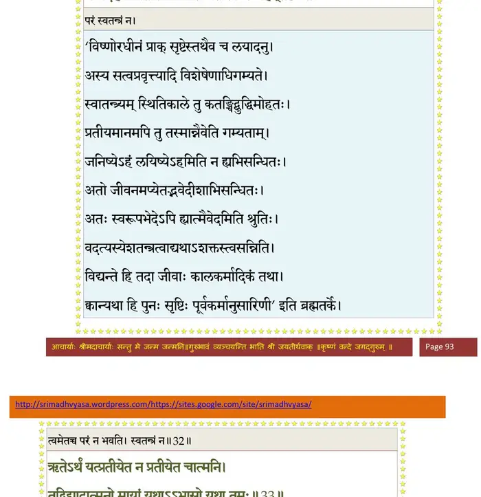
श्लोक ९
प्रेवाच मह्मं स दयालुरुक्तो मुनिः पुलस्त्येन पुराणमाद्यम् ।
सोऽहं तवैतत् कथयामि वत्स श्रद्धालवे नित्यमनुव्रताय।। ९ ।।
सोऽहं तवैतत् कथयामि वत्स श्रद्धालवे नित्यमनुव्रताय।। ९ ।।
श्लोक १०
उदप्लुतं विश्वमिदं तदासीद् यन्निद्रया मीलितदृङ् न्यमीलयत् ।
अहीन्द्रतल्पेऽधिशयान एकः कृतक्षणः स्वात्मरतावनीहः।। १० ।।
अहीन्द्रतल्पेऽधिशयान एकः कृतक्षणः स्वात्मरतावनीहः।। १० ।।
श्लोक ११
सोऽन्तःशरीरेऽर्पितभूतसूक्ष्मः कालात्मिकां शक्तिमुदीरयाणः ।
उवास तस्मिन् सलिले पदे स्वे यथाऽनलो दारुणि रुद्धवीर्यः।।११।।
उवास तस्मिन् सलिले पदे स्वे यथाऽनलो दारुणि रुद्धवीर्यः।।११।।
भागवततात्पर्यनिर्णय
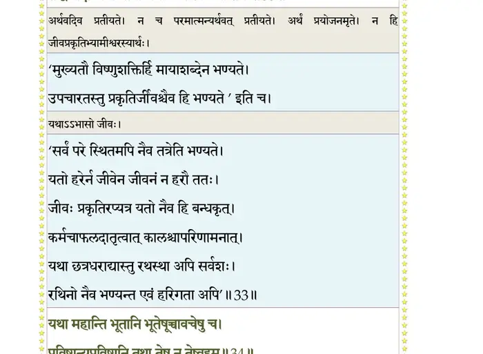
श्लोक १२
चतुर्युगानां च सहस्रमप्सु स्वपंस्तयोदीरितया स्वशक्त्या ।
कालाख्ययाऽसादितकर्मतन्त्रो लोकानपीमान् ददृशे स्वदेहे।। १२ ।।
कालाख्ययाऽसादितकर्मतन्त्रो लोकानपीमान् ददृशे स्वदेहे।। १२ ।।
श्लोक १३
तस्यात्मसूक्ष्माभिनिविष्टदृष्टेरन्तर्गतोऽर्थो रजसाऽतनीयान् ।
गुणेन कालानुगतेन विद्धः शुष्यंस्तदाऽभिद्यत नाभिदेशात्।। १३ ।।
गुणेन कालानुगतेन विद्धः शुष्यंस्तदाऽभिद्यत नाभिदेशात्।। १३ ।।
भागवततात्पर्यनिर्णय
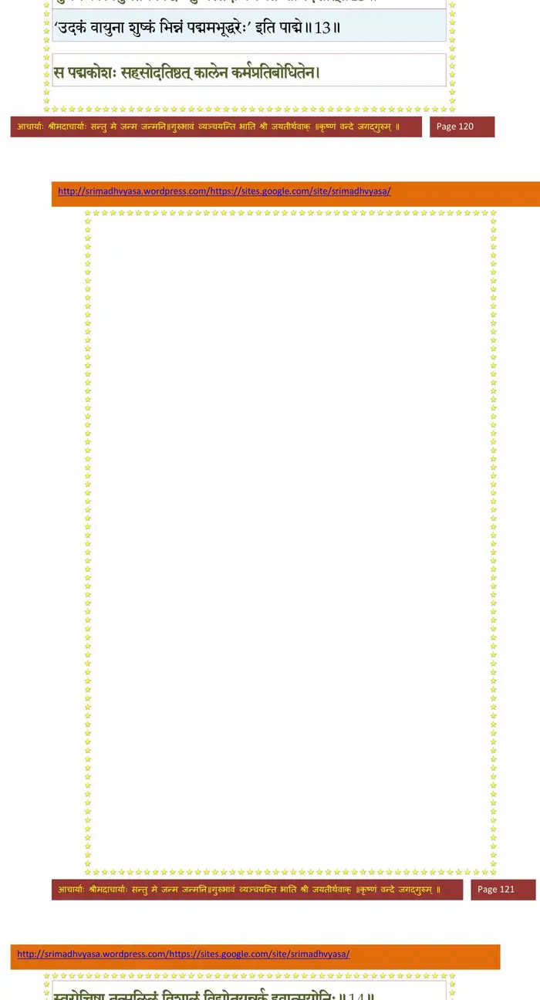
श्लोक १४
स पद्मकोशः सहसोदतिष्ठत् कालेन कर्मप्रतिबोधितेन ।
स्वरोचिषा तत् सलिलं विशालं विद्योतयन्नर्क इवात्मयोनिः।। १४ ।।
स्वरोचिषा तत् सलिलं विशालं विद्योतयन्नर्क इवात्मयोनिः।। १४ ।।
भागवततात्पर्यनिर्णय
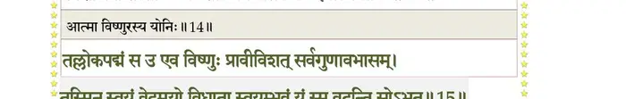
श्लोक १५
तल्लोकपद्मं स उ एव विष्णुः प्रवीविशत् सर्वगुणावभासम् ।
तस्मिन् स्वयं वेदमयो विधाता स्वयम्भुवं यं स्म वदन्ति सोऽभूत्।। १५ ।।
तस्मिन् स्वयं वेदमयो विधाता स्वयम्भुवं यं स्म वदन्ति सोऽभूत्।। १५ ।।
भागवततात्पर्यनिर्णय
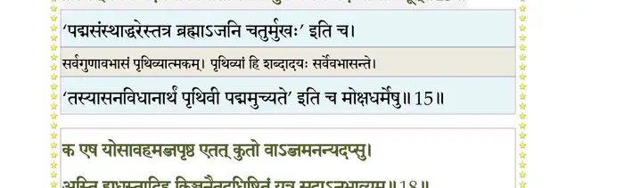
श्लोक १६
तस्यां स चाम्भोरुहकर्णिकायामवस्थितो लोकमपश्यमानः ।
परिक्रमन् व्योमि्न विवृत्तनेत्रश्चत्वारि लेभेऽनुदिशं मुखानि।। १६ ।।
परिक्रमन् व्योमि्न विवृत्तनेत्रश्चत्वारि लेभेऽनुदिशं मुखानि।। १६ ।।
श्लोक १७
तस्माद् युगान्तश्वसनावघूर्णमहोर्मिचक्रात् सलिलाद् विरूढम् ।
अपाश्रितः कञ्जमु लोकतन्त्रं नात्मानमद्धाऽविददादिदेवः।। १७ ।।
अपाश्रितः कञ्जमु लोकतन्त्रं नात्मानमद्धाऽविददादिदेवः।। १७ ।।
भागवततात्पर्यनिर्णय
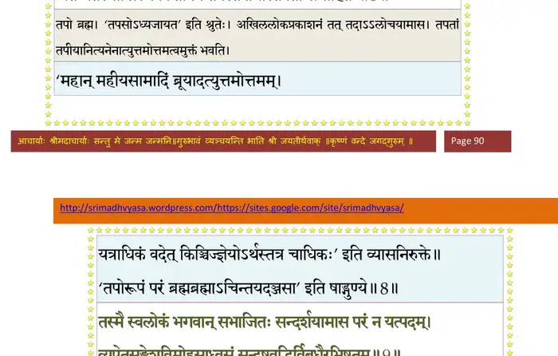
श्लोक १८
क एष योऽसावहमब्जपृष्ठ एतत् कुतो वाऽब्जमनन्यदप्सु ।
अस्ति ह्यधस्तादिह किञ्चनैतदधिष्ठितं यत्र सताऽनुभाव्यम्।। १८ ।।
अस्ति ह्यधस्तादिह किञ्चनैतदधिष्ठितं यत्र सताऽनुभाव्यम्।। १८ ।।
भागवततात्पर्यनिर्णय
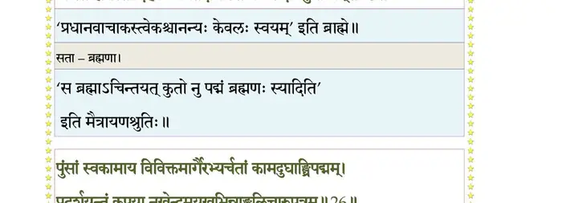
श्लोक १९
स इत्थमुद् वीक्ष्य तदब्जनालनालीभिरन्तर्जलमाविवेश ।
नार्वाग्गतस्तत्खरनालनालीः स वै विचिन्वंस्तदविन्दताजः।। १९ ।।
नार्वाग्गतस्तत्खरनालनालीः स वै विचिन्वंस्तदविन्दताजः।। १९ ।।
श्लोक २०
तमस्यपारे विदुरात्मसर्गं विचिन्वतोऽभूत् सुमहांस्त्रिनेमिः ।
यो देहभाजां भयमीरयाणः परिक्षिणोत्यायुरजस्य हेतिः।। २० ।।
यो देहभाजां भयमीरयाणः परिक्षिणोत्यायुरजस्य हेतिः।। २० ।।
श्लोक २१
ततो निवृत्याप्रतिलब्धकाष्ठः स्वधिष्ण्यमास्थाय पुनः स देवः ।
शनैर्जितश्वासनिवृत्तचित्तो न्यषीददारूढसमाधियोगः।। २१ ।।
शनैर्जितश्वासनिवृत्तचित्तो न्यषीददारूढसमाधियोगः।। २१ ।।
श्लोक २२
कालेन सोऽजः पुरुषायुषाऽभिप्रवृद्धयोगेन विरूढबोधः ।
स्वयं तदन्तर्हृदयेऽवभातमपश्यतापश्यत यन्न पूर्वम्।। २२ ।।
स्वयं तदन्तर्हृदयेऽवभातमपश्यतापश्यत यन्न पूर्वम्।। २२ ।।
भागवततात्पर्यनिर्णय
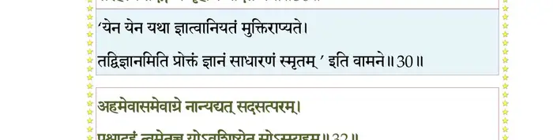
श्लोक २३
मृणालगौरायतशेषभोगपर्यङ्क एकं पुरुषं शयानम् ।
फणासहस्रायुतमूर्धरत्नद्युभिर्हतध्वान्तयुगान्ततोये।। २३ ।।
फणासहस्रायुतमूर्धरत्नद्युभिर्हतध्वान्तयुगान्ततोये।। २३ ।।
श्लोक २४
प्रोक्षां क्षिपन्तं हरितोपलाद्रेः सन्ध्याभ्रनीवेरुरुरुक्ममूर्ध्नः ।
रत्नोदधेरोषधिसौमनस्यवनस्रजो वेणुभुजाङ्घ्रिपाङ्घ्रेः।। २४ ।।
रत्नोदधेरोषधिसौमनस्यवनस्रजो वेणुभुजाङ्घ्रिपाङ्घ्रेः।। २४ ।।
श्लोक २५
आयामतो विस्तरतः समानदेहेन लोकत्रयसंग्रहेण ।
विचित्रदिव्याभरणांशुकानां कृतश्रियोपाश्रितदिव्यवेषम्।। २५ ।।
विचित्रदिव्याभरणांशुकानां कृतश्रियोपाश्रितदिव्यवेषम्।। २५ ।।
श्लोक २६
पुंसां स्वकामाय विविक्तमार्गैरभ्यर्चतां कामदुधाङ्घ्रिपद्मम् ।
प्रदर्शयन्तं कृपया नखेन्दुमयूखभिन्नाङ्गुलिचारुपत्रम्।। २६ ।।
प्रदर्शयन्तं कृपया नखेन्दुमयूखभिन्नाङ्गुलिचारुपत्रम्।। २६ ।।
भागवततात्पर्यनिर्णय
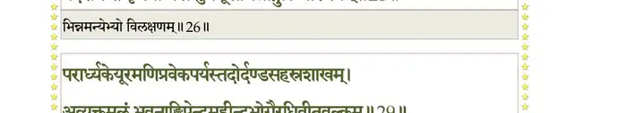
श्लोक २७
मुखेन लोकार्तिहरस्मितेन परिस्फुरत्कुण्डलमण्डितेन ।
शोणायितेनाधरबिम्बभासा प्रत्यर्हयन्तं सुनसेन सुभ्व्रा।। २७ ।।
शोणायितेनाधरबिम्बभासा प्रत्यर्हयन्तं सुनसेन सुभ्व्रा।। २७ ।।
भागवततात्पर्यनिर्णय
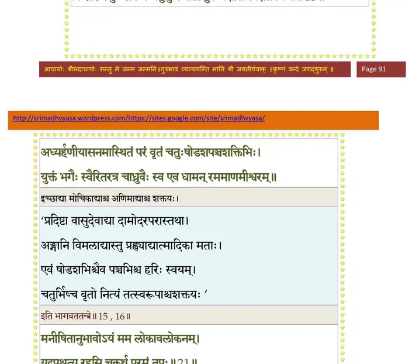
श्लोक २८
कदम्बकिञ्जल्कपिशङ्गवाससा स्वलङ्कृतं मेखलया नितम्बे ।
हारेण चानन्तधनेन वत्स श्रीवत्सवक्षस्थलवल्लभेन।। २८ ।।
हारेण चानन्तधनेन वत्स श्रीवत्सवक्षस्थलवल्लभेन।। २८ ।।
श्लोक २९
परार्घ्यकेयूरमणिप्रवेकपर्यस्तदोर्दण्डसहस्रशाखम् ।
अव्यक्तमूलं भुवनाङ्घ्रिपेन्द्रमहीन्द्रभोगैरधिवीतवल्कम्।। २९ ।।
अव्यक्तमूलं भुवनाङ्घ्रिपेन्द्रमहीन्द्रभोगैरधिवीतवल्कम्।। २९ ।।
भागवततात्पर्यनिर्णय
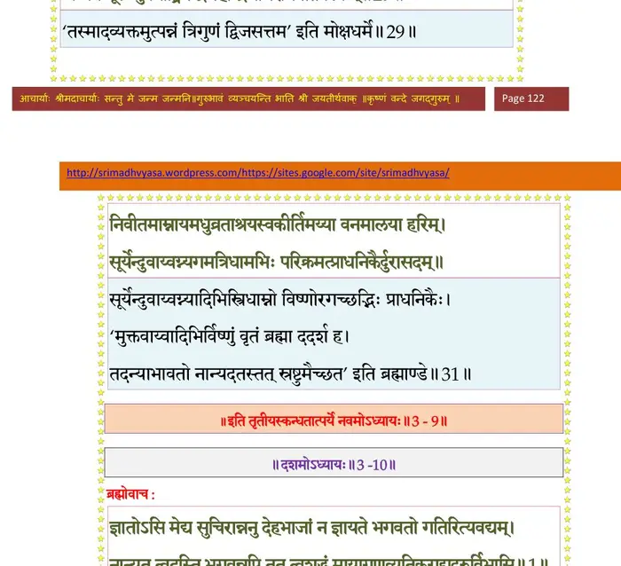
श्लोक ३०
चराचरौको भगवन्महीध्रमहीन्द्रबन्धुं सलिलोपगूढम् ।
किरीटसाहस्रहिरण्यशृृङ्गमाविर्भवत्कौस्तुभरत्नगर्भम्।। ३० ।।
किरीटसाहस्रहिरण्यशृृङ्गमाविर्भवत्कौस्तुभरत्नगर्भम्।। ३० ।।
श्लोक ३१
निवीतमाम्नायमधुव्रताश्रयस्वकीर्तिमय्या वनमालया हरिम् ।
सूर्येन्दुवाय्वग्न्यगमत्त्रिधामभिः परिक्रमत्प्रधनिकैर्दुरासदम्।। ३१ ।।
सूर्येन्दुवाय्वग्न्यगमत्त्रिधामभिः परिक्रमत्प्रधनिकैर्दुरासदम्।। ३१ ।।
श्लोक ३२
तर्ह्येव तन्नाभिसरःसरोजमात्मानमम्भः श्वसनं वियच्च ।
ददर्श देवो जगतो विधाता नातः परं लोकविसर्गदृष्टिः।। ३२ ।।
ददर्श देवो जगतो विधाता नातः परं लोकविसर्गदृष्टिः।। ३२ ।।
श्लोक ३३
स्वकर्मबीजं रजसोपरक्तः प्रजाः सिसृक्षन्नियदेव दृष्ट्वा ।
अस्तौद् विसर्गाभिमुखस्तमीशमव्यक्तवर्त्मन्यभिवेशितात्मा।। ३३ ।।
अस्तौद् विसर्गाभिमुखस्तमीशमव्यक्तवर्त्मन्यभिवेशितात्मा।। ३३ ।।
।। इति श्रीमद्भागवते तृतीयस्कन्धे नवमोऽध्यायः ।।